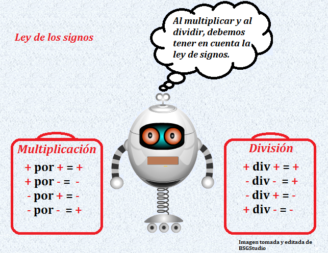

Cuando se multiplican o dividen números enteros, la ley de los signos cambia:

Multiplicación:La multiplicación de enteros se realiza multiplicando normalmente los valores absolutos, y luego aplicando la regla de los signos, que estipula lo siguiente:
- Más por más igual a más. Por ejemplo: (+2) x (+2) = (+4)
- Más por menos igual a menos. Por ejemplo: (+2) x (-2) = (-4)
- Menos por más igual a menos. Por ejemplo: (-2) x (+2) = (-4)
- Menos por menos igual a más. Por ejemplo: (-2) x (-2) = (+4)
División: Funciona igual que la multiplicación.
Por ejemplo:
- (+10) / (-2) = (-5)
- (-10) / 2 = (-5)
- (-10) / (-2) = 5.
- 10 / 2 = 5.
Aprendamos jugando